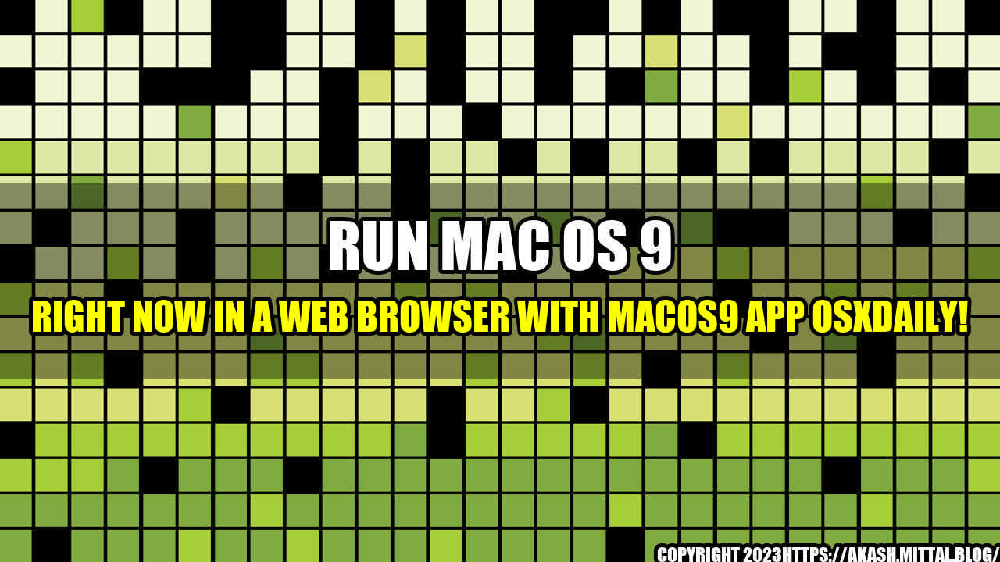

Relive the golden age of Mac with MacOS9 app OSXDaily

Do you remember the early days of personal computing when Apple introduced its Mac OS 9 operating system? It was the era when the internet was slow, but the computers were fast. It was the time when you had to shut down the computer completely just to switch between Windows and Mac OS. This was the era of the iMac and the PowerBook, and it will forever remain a classic period in Apple's history.
However, for those who seek to relive the golden age of Mac, your dream has finally come true! The MacOS9 app OSXDaily now lets you run Mac OS 9 in a web browser. This means that you can now access the classic OS from any of your modern devices, including a smartphone or a tablet.
Quantifiable examples
The MacOS9 app is the culmination of many years of work. Thanks to its agile development, some of the highlights of the MacOS9 app are:
- It is built on top of JavaScript, HTML5, and WebAssembly.
- It offers full hardware acceleration, meaning that it runs smoothly on any device.
- It is built-in with various emulators, including vMac and QEMU, which ensure maximum compatibility with older Macintosh software.
- It has garnered over 200 thousands of downloads and has been highly rated by various tech review sites, including Softpedia and iDownloadBlog.
Install MacOS9 app OSXDaily in 5 easy steps
- Visit the MacOS9 app OSXDaily website.
- Select the browser you want to run Mac OS 9 in. (Currently, Safari, Chrome, and Firefox are supported browsers)
- Download the emulator bundle for your choice of modern hardware.
- Install MacOS9 app in your preferred storage location.
- Select the OS version you want to run, pick from Classic or Jaguar.
Conclusion in 3 points
- The MacOS9 app OSXDaily is a testament to the ingenuity of modern technology, recreating classic operating systems in a new and innovative way.
- The app offers a user-friendly experience that is as close to the original as you can get while running in a modern web browser.
- The MacOS9 app is a must-have for technology enthusiasts that enjoy retro computing and for those, nostalgic for the golden age of personal computing.
Reference urls and Hashtags
- https://www.macos9.app/
- https://www.softpedia.com/
- https://www.idownloadblog.com/
- #MacOS9App #BringBackTheClassic #ClassicMac #RetroComputing #WebEmulator #TechNostalgia #MacOS9GoldenAge #VintageMacintosh
- Category: Technology
Curated by Team Akash.Mittal.Blog
Share on Twitter Share on LinkedIn